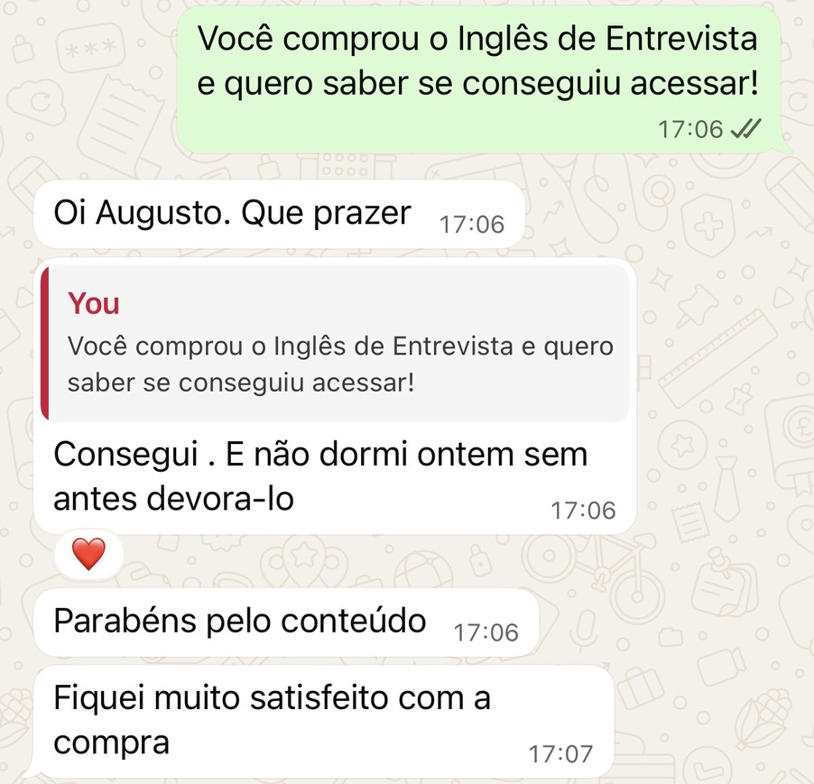
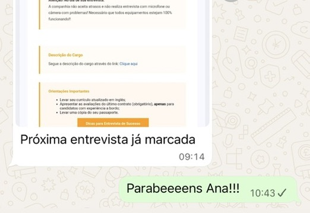
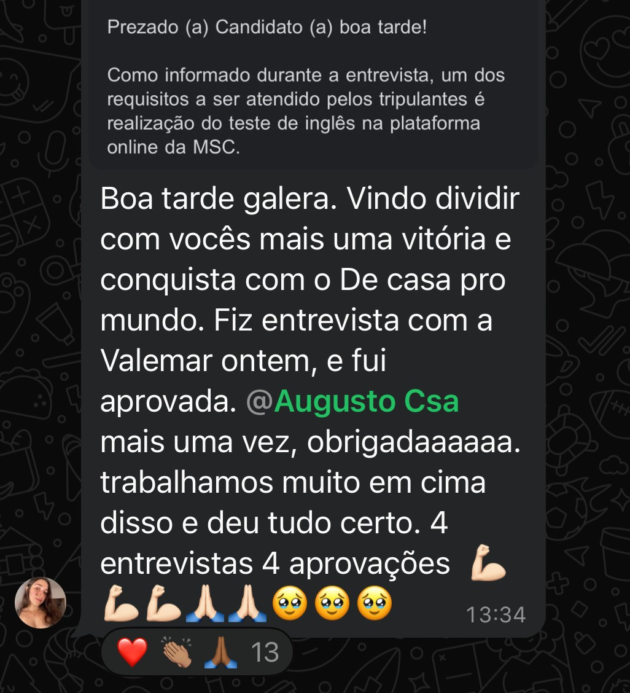

Você entende a pergunta?
Pedir para repetir com calma mostra mais segurança do que fingir que entendeu.
Precisa se apresentar, falar da sua experiência e não travar na hora. O guia ensina isso, do primeiro “hello” ao dia do embarque.





Eu trabalhava servindo mesas e sentia que aquilo não era o meu lugar. Quando falaram de trabalho em navio, a primeira reação foi: “Eu nem sei falar inglês direito”.
Fui para a entrevista com medo de travar, e travei em algumas partes. O que mais ajudou não foi falar perfeito. Foi saber o que o recrutador queria ouvir e ter respostas ensaiadas para as perguntas que sempre caem.
Hoje eu trabalho a bordo. Esse guia é o que eu gostaria de ter tido naquela época: direto, prático e sem enrolação.
O recrutador avalia três coisas, nesta ordem:
Pedir para repetir com calma mostra mais segurança do que fingir que entendeu.
Frases curtas, com alguns erros, funcionam. O que importa é a resposta fazer sentido.
Calma, sorriso e não desistir no meio da frase pesam mais do que o vocabulário.
Cada capítulo tem uma tarefa prática. A ideia é treinar a frase até ela sair sem pensar em português primeiro.
O que o recrutador realmente avalia.
As etapas, do currículo ao retorno da proposta.
A primeira pergunta de quase toda entrevista, com estrutura pronta.
Mesmo que ela não seja da área de hospitalidade.
Com respostas modelo para as principais perguntas.
Como não travar sob pressão.
Para pedir ajuda e atender hóspedes nos primeiros dias.
Muita gente com inglês razoável cai nos mesmos erros.
A entrevista do início ao fim, do jeito que vai acontecer.
O que fazer depois de treinar.
Frases curtas e vocabulário simples passam mais confiança do que frases longas e cheias de pausa.
“Can you tell me a little about yourself?”A pergunta que quase toda entrevista faz. O guia mostra como responder em quatro blocos.
“Yes, I understand the contract length and I’m fully prepared for it.”Como responder sobre o tempo longe de casa, com firmeza.
“Sorry, could you repeat that, please?”Pedir para repetir é sinal de maturidade, não de fraqueza.
Você fala o básico de inglês, mas trava quando precisa falar
Nunca fez uma entrevista de embarque e não sabe o que esperar
Já tentou e não passou, e quer entender o que faltou
Quer chegar à entrevista com respostas prontas para as perguntas comuns
R$ 37
à vista, ou 8x de R$ 5,38 no cartão
✓ Sem risco: 7 dias de garantia
Quero o guia agoraApós a confirmação do pagamento, o acesso é enviado pela própria plataforma de compra.
Sim. O guia foi feito para quem não é fluente. Ele ensina respostas prontas e como se comunicar mesmo com vocabulário simples.
Serve. O capítulo 4 mostra como falar da sua experiência de qualquer área, com exemplos de frases.
Após a confirmação do pagamento, o acesso é enviado pela própria plataforma de compra.
Não. O guia prepara você para a entrevista, mas a contratação depende da empresa. O objetivo é que você chegue confiante e preparado.
Não espere se sentir “pronto” para começar. Comece com a primeira frase de hoje.